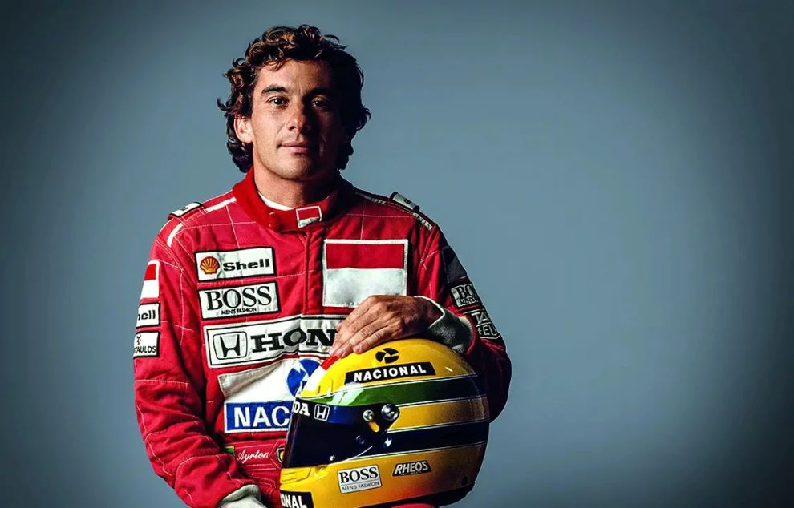

A vitória sempre foi mais do que um troféu para Ayrton Senna;
era a materialização de seu talento e esforço incansável. Cada pódio simbolizava sua paixão pelo automobilismo e seu desejo de sempre ir além dos limites.Inicio
- 1981 - O Primeiro Passo Ayrton inicia sua carreira no kart, onde seu talento já brilha e chama atenção.
- 1984 - A Primeira Temporada na F1 Sua estreia na Fórmula 1 pela Toleman acontece em Mônaco, onde impressiona com uma incrível performance sob chuva.
Auge
- 1988 - O Primeiro Título Mundial Pela McLaren-Honda, Ayrton conquista seu primeiro campeonato mundial, marcando o início de uma era de sucesso.
- 1991 - O Tricampeonato Mundial Com uma performance impecável, ele se torna tricampeão e se firma como uma lenda do automobilismo.
Última Corrida:
- 1994 - O Acidente em Imola Durante o Grande Prêmio de San Marino, Senna sofre um acidente fatal, encerrando sua trajetória mas deixando um legado eterno.
Legado

O Instituto Ayrton Senna, fundado após sua morte, é um símbolo de seu desejo de construir um futuro melhor para o Brasil. Dedicado à educação e ao desenvolvimento de crianças e jovens, o instituto já impactou milhões de vidas. A paixão de Senna por superar limites continua viva, não apenas nas pistas, mas em cada criança que se beneficia do trabalho da instituição.
"Se uma pessoa não tem sonhos, não tem razão para viver." – Ayrton Senna
“No que diz respeito ao compromisso, à dedicação e ao esforço, não existe meio termo. Ou você faz uma coisa bem feita ou não faz.”
“Dinheiro é um resultado. Eu quero correr, vencer e ser feliz, e o dinheiro vem como consequência.”
“Se você quer ser bem-sucedido, precisa ter dedicação total, buscar seu último limite e dar o melhor de si.”
Em 1991, Ayrton Senna venceu o GP do Brasil com apenas uma marcha funcionando.
Ayrton Senna foi o piloto que mais vitórias acumulou em corridas disputadas sob chuva.
Seu capacete amarelo com detalhes verdes e azuis se tornou um dos ícones mais reconhecíveis da F1.